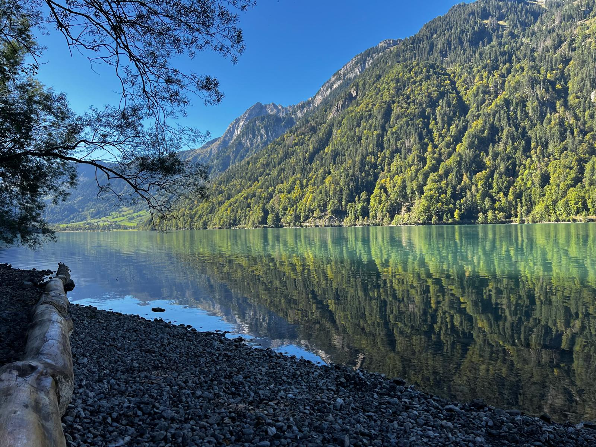
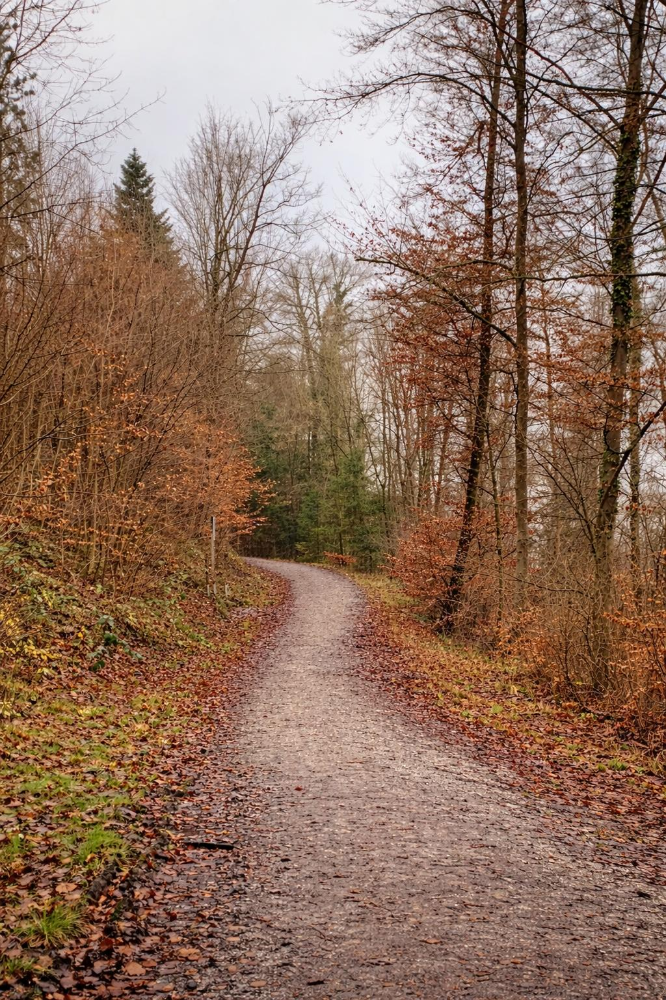
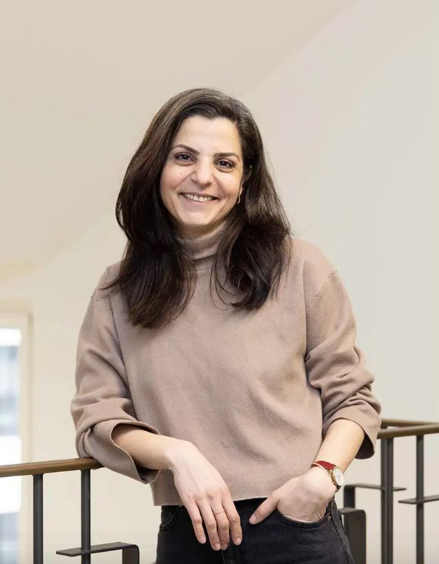
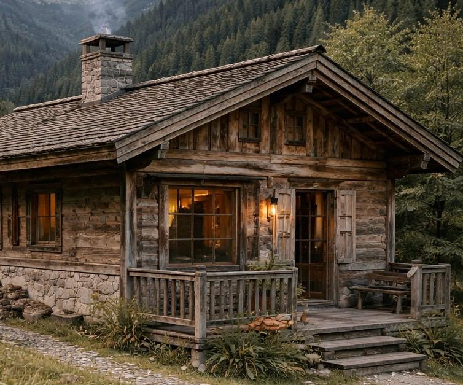
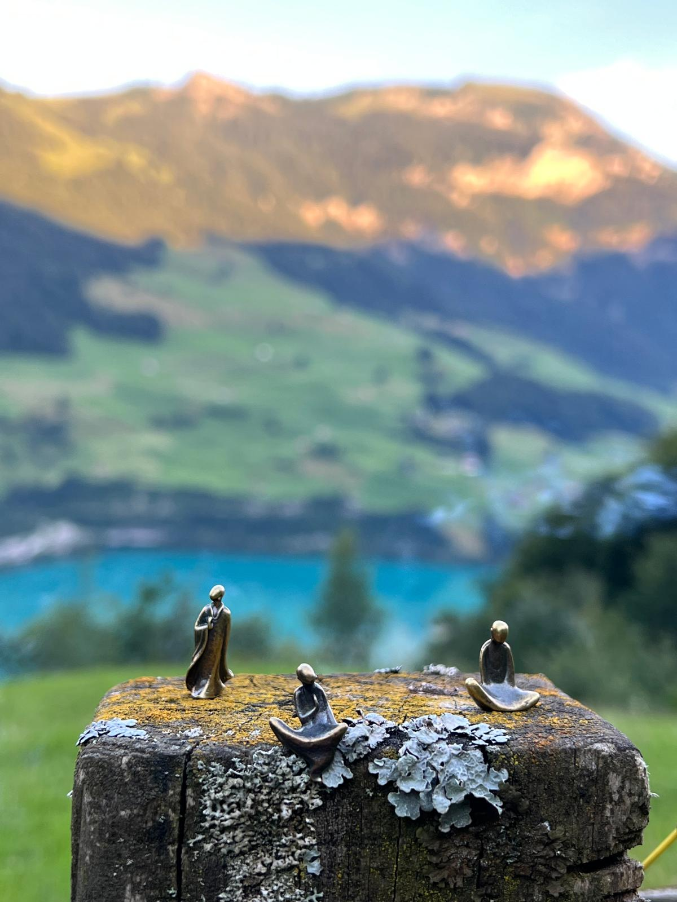

Willkommen bei Mamani.
KontaktMamani ist ein Raum bewusster Anwesenheit. Ein geschützter Rahmen, in dem sich innere Ordnung von selbst zeigen darf.
Menschen in Transformationsphasen kommen hier zur Ruhe. Ein Ort, an dem Übergänge nicht beschleunigt, sondern gehalten werden. Ein Retreat für Menschen mitten im inneren Wandel.
Hier darf das Alte sich lösen. Hier darf das Neue noch unfertig sein.
Es ist ein Raum für Klarheit, Sammlung
und innere Neuordnung. Ein Raum, in dem Gedanken sich sortieren, Gefühle Raum bekommen und Entscheidungen aus
der eigenen Tiefe entstehen und der Körper zur Ruhe kommt.
Sein ist hier wichtiger als Tun. Innere Wahrhaftigkeit wichtiger als Tempo.
Das ist
Mamani.

Ein Retreat bei Mamani ist kein festgelegtes Ziel. Es ist ein Raum, in dem sich zeigen darf, was bereit ist. Du kommst mit dem, was dich bewegt. Mit Fragen oder ohne. Mit Klarheit oder Verwirrung.
Du verlässt Mamani nicht verändert im Sinne von „neu gemacht“. Du verlässt es sortierter. Verbundener. Aufgerichteter und mit dem, was sich aus dir heraus entfalten wollte.
Mamani ist die Stimme eines Kindes, das auf Persisch nach seiner Grossmutter
ruft. Ein Ruf aus dem Herzen.
So ruft mein Sohn auch meine Mutter.
Vielleicht befindest du dich gerade an einem Punkt in deinem Leben, an dem etwas sich neu ordnen will, ob es sich erst als Unruhe zeigt, bereits als Wahrheit oder schon als Bewegung.
Eine Schwelle ist kein Ort der schnellen Lösung. Sie ist der Moment, an dem ein Mensch innehält und beginnt zu spüren, dass sich sein Leben neu ordnen will. Mamani ist ein Raum für genau diese Momente.
Du kommst nicht hierher, weil alles zusammengebrochen ist. Und auch nicht, weil bereits alles entschieden und geklärt ist. Du kommst in einer Phase dazwischen.
Diese Übergänge verlaufen oft in drei natürlichen Bewegungen.
Zuerst entsteht eine innere Unruhe.
Etwas im eigenen Leben beginnt zu fragen. Gewohnte Strukturen passen nicht mehr ganz, doch die Richtung ist
noch nicht klar.
Hier begleite ich dich dabei, diese Unruhe ernst zu nehmen, ohne sie sofort erklären oder lösen zu müssen.
Gemeinsam geben wir ihr Raum, bis sich langsam zeigt, was in deinem Leben gesehen werden möchte. So wird
spürbar, dass Unruhe kein Feind ist, sondern oft das erste ehrliche Signal einer inneren Bewegung.
Dann kommt manchmal der Moment der Wahrheit.
Eine Erkenntnis wird klarer. Eine Entscheidung beginnt sich abzuzeichnen. Das kann befreiend und gleichzeitig
beunruhigend sein. In dieser Phase erkennen und halten wir deine Wahrheit, ohne sie zu verhandeln. Du bekommst
ein Gefühl dafür, wie deine Klarheit dein Nervensystem reguliert, während gleichzeitig innere Widersprüche
gehalten werden können.
Schließlich beginnt der Übergang selbst.
Etwas bewegt sich. Eine Entscheidung geschieht, ein Lebensabschnitt verändert sich, eine neue Richtung
entsteht.
In dieser offenen Zeit entstehen häufig Fragen nach Orientierung, Identität, innerer Ordnung und dem eigenen
Weg. Gleichzeitig kann genau hier ein tieferes Selbstbewusstsein wachsen: das Erkennen der eigenen Muster und
Bewegungen sowie die Neugier auf das eigene Selbst.
Mamani versteht diese Phasen nicht als Probleme, die gelöst werden müssen. Sondern als natürliche Schwellen im Leben eines Menschen.
Der Raum von Mamani ist dafür da, solche Übergänge bewusst zu betreten: mit Ruhe, Aufmerksamkeit und der Freiheit, das eigene Leben aus einem anderen Winkel neu zu betrachten.

Gespräche bei Mamani öffnen einen ruhigen Raum, in dem Gedanken ausgesprochen und betrachtet werden können.
Im Gespräch wird oft sichtbar, wie schnell sich der Verstand in Gedankenschleifen verfängt. Fragen
wiederholen sich, Antworten drehen sich im Kreis.
Durch Aufmerksamkeit, ehrliches Hinschauen und gezielte Unterbrechungen dieser Schleifen kann sich plötzlich
etwas verschieben. Gedanken ordnen sich neu und eine andere Form von Klarheit wird spürbar.
Übergänge zeigen sich nicht nur im Denken.
Auch der Körper trägt Spannungen, Erfahrungen und Emotionen. Manchmal zeigt sich das als Unruhe, Müdigkeit
oder innere Anspannung.
Bewegung hilft, diesen Zustand zu regulieren. Das kann eine ruhige Körperpraxis sein, ein Spaziergang oder auch eine körperlich intensivere Aktivität in der Natur. Der Körper wird dabei Teil des Prozesses. Du entscheidest, welche Form der Bewegung deinen inneren Prozess unterstützt.
Veränderung berührt vor allem das Nervensystem.
Wenn sich alte Strukturen lösen oder Entscheidungen näher rücken, entsteht häufig ein Zustand innerer
Spannung. Gedanken beschleunigen sich, der Körper reagiert, Ruhe wird schwer zugänglich.
In der gemeinsamen Zeit entsteht Raum, in dem sich das Nervensystem wieder beruhigen und stabilisieren kann.
Mit dieser inneren Ruhe wird es möglich, Klarheit wahrzunehmen, ohne von innerem Druck überlagert zu sein.
Die Natur ist einer der wichtigsten Räume von Mamani. Draussen zeigt sich Wandel in seiner natürlichsten Form: etwas vergeht, etwas verändert sich, etwas beginnt neu zu wachsen. Ohne Eile. Ohne Widerstand. Ohne Erklärung.
Nicht als Konzept, sondern sichtbar vor Augen.
Zeit in der Natur bedeutet beobachten, gehen, stehen bleiben, weitergehen.
Während wir die Natur wahrnehmen, beginnt sich oft auch der Blick auf das eigene Leben zu verändern.
Bewegungen, die zuvor fest oder unklar erschienen, werden plötzlich sichtbar.
Die Natur wird bei Mamani nicht als Kulisse genutzt. Wir lernen von ihr und begegnen ihr mit Respekt. Auch Tiere sind Teil dieses Raumes und begegnen uns manchmal als stille Begleiter.
Seit jeher begleiten Menschen Übergänge mit Ritualen. Ein Ritual macht sichtbar, was innerlich bereits geschieht: ein Abschnitt wird gewürdigt, etwas wird bewusst losgelassen oder ein neuer Schritt wird betreten.
Bei Mamani gibt es keine festgelegten Rituale. Sie entstehen aus dem Moment und aus der Schwelle, an der du gerade stehst.
Manchmal ist es eine kleine Handlung in der Natur, ein bewusst gesetzter Schritt, ein Gegenstand, der für einen Übergang steht, oder ein stiller Moment, der eine Entscheidung im eigenen Erleben verankert.
Rituale geben dem Unsichtbaren eine Form. Nicht als Symbol, sondern als Handlung.
Möchtest du deiner Schwelle in einem Raum begegnen, der dich hält?
Ich bin Sepideh. Ich kenne Brüche. Ich kenne das Gefühl, wenn ein altes Leben endet, bevor ein neues sichtbar ist. Ich kenne Zeiten ohne Struktur, ohne Sicherheit, ohne klaren Boden.
Ich begleite Menschen in persönlichen Umbrüchen und tiefen Transformationsphasen, während sie sich erinnern.
Ich glaube, dass alles Wesentliche aus dem Inneren entsteht. Nicht durch Optimierung. Nicht durch Selbstkorrektur. Sondern durch ehrliche Begegnung mit dem, was ist. Meine Arbeit beginnt mit Präsenz. Ich halte Räume, in denen etwas stirbt und gleichzeitig etwas geboren wird.
Jede Begegnung entsteht neu.
Persönlich. Nah. Echt.
Meine
Ausrichtung ist individuell. Wie du.

Mamani findet in einem einfachen Holzhaus inmitten der Natur statt. Der Ort wird jeweils von mir achtsam und passend zu deinem Prozess gewählt und im Vorfeld bekanntgegeben.
Der Aufenthalt ist bewusst auf das Wesentliche reduziert. Für einfache, ehrliche Verpflegung ist gesorgt.
Das gemeinsame Sein darf selbstverständlich werden, ob im Tun oder im Lassen. Nichts muss. Vieles ordnet sich von selbst.
Digital Detox
Während des Retreats ruhen elektronische Geräte.
Der äussere Lärm darf still werden, damit das Innere wieder hörbar wird.
Mamani ist auf eine Person zur gleichen Zeit ausgerichtet. So entsteht ein stiller, geschützter Raum.
Jedem Aufenthalt geht ein Kennenlernen voraus, um die gegenseitige Stimmigkeit zu prüfen.
Mamani ist ein Raum für persönliche Übergänge und für Menschen, die bereit sind, sich selbst wahrhaftig zu
begegnen.
Es ist kein therapeutisches Angebot.
Wenn jemand aktuell mit Suchterkrankungen, schweren mentalen Belastungen oder akuten Krisen lebt, kann es sein, dass Mamani nicht der passende Rahmen ist. Zeigt sich im Kennenlerngespräch, dass eine andere Form der Begleitung hilfreicher wäre, empfehle ich gerne entsprechende Fachstellen.
Mamani ist als 1:1 Intensivbegleitung konzipiert. Reduziert. Naturnah. Bewusst begrenzt. Es ist ein Übergangsraum. Du wählst den Zeitraum, der deinem Prozess entspricht.

CHF 2’700.-
Drei Tage sind ein bewusster Schritt aus dem Gewohnten. Ein Innehalten. Ein Ankommen. Der Alltag tritt in den Hintergrund. Gedanken dürfen sich sortieren. Das, was innerlich durcheinander war, bekommt Raum.
Drei Tage öffnen einen Übergang. Ohne Ziel. Ohne Erwartung. Nur mit der Bereitschaft, sich selbst zu begegnen.
CHF 4’200.-
Fünf Tage folgen einem anderen Rhythmus. Was in den ersten Tagen sichtbar wird, darf bleiben. Was sich gezeigt hat, darf vertieft werden. Was in Bewegung kam, darf durchlaufen werden.
Fünf Tage erlauben Vertiefung in die Tragfähigkeit und eine erste Integration. Um das Durchgehen statt nur Berühren. Das Bleiben, wenn es still oder unruhig wird.
CHF 750.- / Tag
Nicht alles lässt sich im Voraus bestimmen. Wenn der Prozess es verlangt, bleibt der Raum geöffnet.
Ein
weiterer Tag darf sich anschliessen, wenn sich der Wunsch nach mehr Raum zeigt. Wir stimmen uns gemeinsam ab.
Mit der Buchung wird eine Anzahlung von 50 % des Gesamtbetrags fällig. Erst mit Eingang der Anzahlung ist der Aufenthalt verbindlich reserviert.
Der Restbetrag ist spätestens zwei Wochen vor Retreatbeginn zu begleichen. Bei einer Absage bis zu diesem Zeitpunkt bleibt die Anzahlung bestehen. Danach wird der volle Betrag fällig, da der Raum exklusiv für dich freigehalten und vorbereitet ist.
Im Krankheitsfall ist eine einmalige Verschiebung möglich, sofern die Mitteilung spätestens 48 Stunden vor Retreatbeginn erfolgt. Die Anzahlung wird auf den neuen Termin angerechnet.

Vertraulichkeit
Alles, was du während deines Aufenthalts teilst, wird von mir vertraulich
behandelt. Der Raum von Mamani ist geschützt und bleibt frei von Weitergabe an Dritte.
Wenn du spürst, dass Mamani dich ruft, melde dich für ein erstes Kennenlernen. In diesem Gespräch klären wir in Ruhe, ob der Raum für dich und dein Anliegen stimmig ist. Ohne Verpflichtung. Ohne Erwartung.
Wenn ich nicht unmittelbar antworte, befinde ich mich gerade in einem Aufenthalt. Schreibe mir gerne per E-Mail und ich melde mich zeitnah bei dir.
Ich freue mich auf dich.
E-Mail schreiben